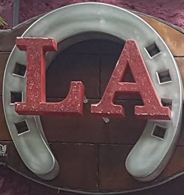
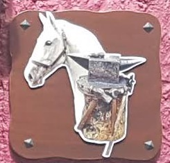

03La casa
Desde 1960 en la calle Cologán
Una fachada que no se olvida: fucsia, una herradura de hierro abrazando el rótulo y, a cada lado de la puerta, un caballo junto al yunque. El azulejo de la entrada lo dice claro: desde 1960.
Dentro, un comedor rústico y acogedor, la carta en la puerta en varios idiomas y un equipo que atiende rápido y con una sonrisa. Más de sesenta años dando de comer al casco antiguo del Puerto.

